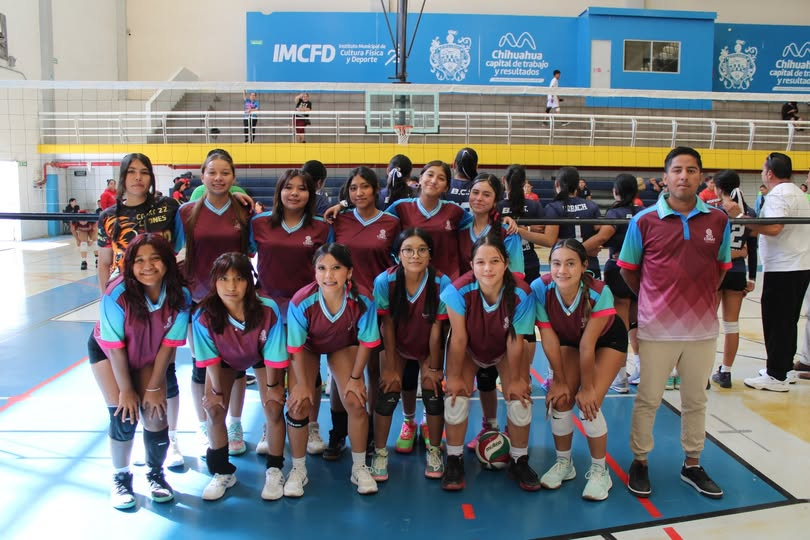

El Deporte de los Reflejos
El voleibol es un deporte de equipo dinámico y explosivo donde dos conjuntos se enfrentan sobre una cancha dividida por una red. El objetivo es pasar el balón por encima de la red y lograr que toque el suelo del equipo contrario, requiriendo una excelente coordinación, saltos impresionantes y reflejos rápidos.

Posiciones en la Cancha
| Posición | Rol Principal | Característica |
|---|---|---|
| Acomodador (Armador) | Organizar la ofensiva | Es el "cerebro" del equipo, decide a quién pasar el balón para el remate. |
| Líbero | Defensa y recepción | Usa un uniforme de otro color y no puede rematar ni sacar. |
| Atacante Exterior | Rematar y recibir | Suele recibir la mayoría de los saques y ataca por las bandas. |
| Bloqueador Central | Bloquear al rival | Suelen ser los más altos, defienden en la red y hacen ataques rápidos. |
Las Mejores Jugadas
¡Gracias por tu visita!
He grabado un pequeño saludo para presentarte esta página. Haz clic en el botón para verlo: